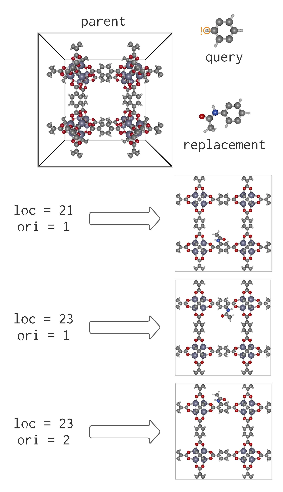

Find/Replace Operations
Suppose we wish to conduct the find-and-replace operations illustrated in the figure below, to produce an acetylamido-functionalized IRMOF-1 structure.
the parent structure
First, we load the parent IRMOF-1 structure and infer its bonds.
parent = Crystal("IRMOF-1.cif")
infer_bonds!(parent, true)the query fragment
Next, we define a query fragment as a p-phenylene moiety. To guide the replacement, the masked atoms of the query fragment must be annotated with ! in the .xyz input file by appending a ! character at the end of their atomic symbols. The atom property viewer feature in iRASPA is useful for figuring out which atom(s) to mask.
A masked atom (marked with !) in the query fragment implies that the corresponding atom of the parent crystal structure (i) must be removed [e.g., to make room for replacement with a different functionality] but (ii) does not correspond with an atom on the replacement fragment and thus cannot be used in the process of aligning the replacement fragment onto the parent crystal.
In our example, in 2-!-p-phenylene.xyz input file describing our p-phenylene query fragment, one H atom is masked (see figure above):
10
C -1.71069 0.96969 -0.46280
C -0.48337 1.30874 0.11690
C -2.33707 -0.23371 -0.12103
C 0.11757 0.44439 1.03836
C -0.50881 -0.75900 1.38013
C -1.73613 -1.09805 0.80043
H! 1.06706 0.70670 1.48683
H 0.00122 2.23972 -0.14750
H -3.28655 -0.49601 -0.56950
H -2.22071 -2.02904 1.06484We then read the input file for the query fragment.
query = moiety("2-!-p-phenylene.xyz")the replacement fragment
Next, we read in the acetylamido-functionalized version of the query fragment, 2-acetylamido-p-phenylene.xyz, as the replacement fragment:
replacement = moiety("2-acetylamido-p-phenylene.xyz")the find step
We search for subgraphs of the parent structure that match the query fragment. Note the ! tags are ignored during the substructure_search.
search = query in parent # equivalent to substructure_search(query, parent)the replace step
The code below will, at each location in the parent where a substructure matched the query fragment, choose a random orientation (corresponding to an overlay of the query with the substructure), align and install the replacement fragment, then remove the original substructure, giving the child structure shown in the figure above.
child = substructure_replace(search, replacement)To direct the number, location, and orientation of the replacements, use the keyword arguments for substructure_replace. Particularly, the location loc and orientation ori keyword arguments specify a particular isomorphism to use (in reference to search.isomorphisms) when conducting a replacement operation. The figure below illustrates.

For more details, see the search docs and the replacement modes example.
quick find-and-replace syntax
For one-shot find-and-replace operations, the replace function may be used:
child = replace(parent, query => replacement)Generally, it is advisable to perform the search using substructure_replace then pass it to replace, as multiple replacement tasks can then be performed on the basis of the search step as opposed to repeating it for each replacement. The search is usually the slowest step, and it is desirable not to perform it repeatedly.
Documentation of functions
PoreMatMod.substructure_replace — Functionchild = substructure_replace(search, replacement; random=false, nb_loc=0, loc=Int[], ori=Int[], name="new_xtal", verbose=false, remove_duplicates=false, periodic_boundaries=true)Replace the substructures of search.parent matching the search.query fragment with the replacement fragment, at locations and orientations specified by the keyword arguments random, nb_loc, loc, and ori. Default behavior is to effect replacements at all "hit" locations in the parent structure and, at each location, choose the orientation giving the optimal (lowest error) spatial aligment.
Returns a new Crystal with the specified modifications (returns search.parent if no replacements are made).
Arguments
search::SearchtheSearchfor a substructure moiety in the parent crystalreplacement::Crystalthe moiety to use for replacement of the searched substructurerandom::Boolsettrueto select random replacement orientationsnb_loc::Intassign a value to select random replacement atnb_locrandom locationsloc::Array{Int}assign value(s) to select specific locations for replacement. Iforiis not specified, replacement orientation is random.ori::Array{Int}assign value(s) whenlocis assigned to specify exact configurations for replacement.0values mean the configuration at that location should be selected for optimal alignment with the parent.name::Stringassign to give the generatedCrystala name ("new_xtal" by default)verbose::Boolsettrueto print console messages about the replacement(s) being performedremove_duplicates::Boolsettrueto automatically combine overlapping atoms of the same species in generated structures.reinfer_bonds::Boolsettrueto re-infer bonds after producing a structureperiodic_boundaries::Boolsetfalseto disable periodic boundary conditions when checking for atom duplication or re-inferring bonds
Base.replace — Functionchild = replace(parent, query => replacement)Generates a child crystal structure by (i) searches the parent crystal structure for subgraphs that match the query then (ii) replaces the substructures of the parent matching the query fragment with the replacement fragment.
Equivalent to calling substructure_replace(query ∈ parent, replacement).
Accepts the same keyword arguments as substructure_replace.